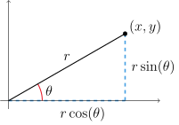

Table of Contents
Miscellaneous Topics

NARROW DISPLAY WARNING
You are most likely using a tablet or mobile device in portrait orientation. This website is best viewed using a typical computer screen with the browser window maximized.
Viewing this website in portrait orientation can cause problems with equations being longer than the screen width (you can scroll to the right), images being poorly sized, and the font size of maths text being much smaller than regular text. If your only option is a tablet or mobile device, your viewing experience will be better if you view this website in landscape orientation. You might need to refresh the page to fix any problems after rotating.
In polar coordinates, a point in the plane is described with $(r,\theta)$ where $r$ is the distance of the point from the origin and $\theta$ is the angle anti-clockwise from the positive half of the horizontal axis. Polar coordinates are most useful for any shape that has some sort of radial symmetry about the origin, such as circles and spirals.
One way to measure an angle is using degrees from 0° to 360°. The reason 360 was used is because many integer divide 360 exactly, which is convenient for calculations.
360 is divided by each of 2, 3, 4, 5, 6, 8, 9, 10, 12, 15, 18, 20, 24, 30, 36, 40, 45, 60, 72, 90, 120, 180
The definition of radians goes back to physics where Euler in 1765 choose to use radians so the formula for angular velocity had a nice definition of $\omega = \dfrac{v}{r}$ without the need for a dimensional constant $\eta$ in $\omega = \dfrac{v}{\eta r}$.
An angle measured in radians is the arclength of a wedge of a circle of radius one where the pointy part of the wedge forms the angle, which is called the angle is subtended by the arc.

GIF courtesy of Wikipedia.
A circle of radius $r = 1$ has a circumference of $2\pi r = 2\pi$, which is why:
An angle of $2\pi$ radians rotates all the way back around to the positive horizontal axis because the entire circumference of the unit circle is $2\pi$.
An angle of $\pi$ radian rotates halfway around to the negative horizontal axis because half the circumference of the unit circle is $\dfrac{1}{2}2\pi = \pi$.
An angle of $\dfrac{\pi}{2}$ radian rotates to the positive vertical axis because a quarter of the circumference of the unit circle is $\dfrac{1}{4}2\pi = \dfrac{\pi}{2}$.
An angle of $\dfrac{3\pi}{2}$ radian rotates to the negative horizontal axis because three quarters of the circumference of the unit circle is $\dfrac{3}{4}2\pi = \dfrac{3\pi}{2}$.
An angle of $\dfrac{\pi}{4}$ radian rotates to the middle of the first quadrant, one eighth around, because one eighth of the circumference of the unit circle is $\dfrac{1}{8}2\pi = \dfrac{\pi}{4}$.
Translating from Cartesian to polar coordinates can be done using trigonometry.
\begin{equation} r = \sqrt{x^{2}+y^{2}} \qquad \theta = \text{atan2}(y,x) \end{equation} \begin{equation} x = r\cos(\theta) \qquad y = r\sin(\theta) \end{equation}The $\text{atan2}(y,x)$ function is the arctangent function $\text{arctan}\left(\dfrac{y}{x}\right)$ that is aware of the signs of $x$ and $y$ so that the output angle is in the correct quadrant. Using $\text{arctan}\left(\dfrac{y}{x}\right)$ can require adding $\pi$ to the output so the output angle lies in the same quadrant as the point $(x,y)$.
Try to plot the function yourself.
\begin{equation} r(\theta) = \cos\left(\frac{1}{2}\theta\right) \end{equation}To check your work, use the above link to WolframAlpha which has the following input already entered.
polar plot r=cos(1/2*theta) from 0 to 4pi
Try to plot the function yourself.
\begin{equation} r(\theta) = \cos(3\theta) + 2 \end{equation}To check your work, use the above link to WolframAlpha which has the following input already entered.
polar plot r=cos(3*theta) + 2 from 0 to 2pi